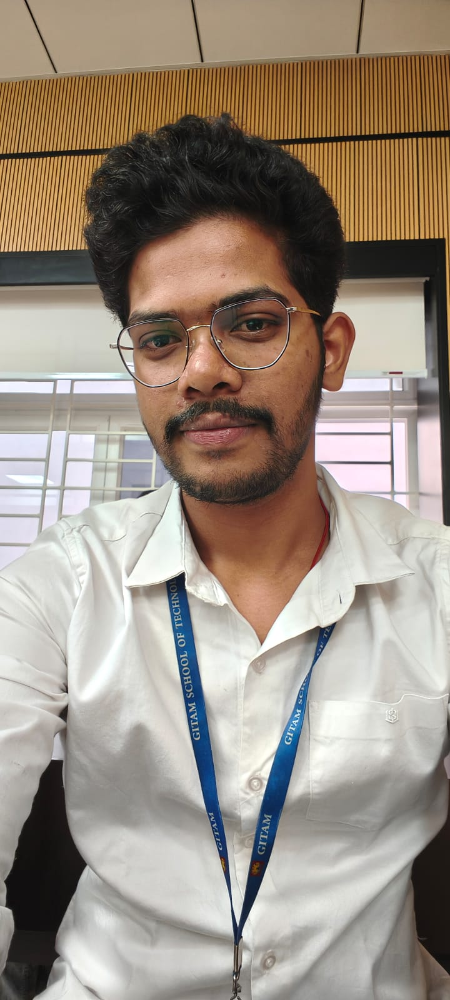

01{ }
Programming
Writing logic, understanding memory and building a reliable firmware foundation.
FOUNDATION
HELLO, I'M PAVAN KUMAR
Aspiring Embedded Systems Engineer / B.Tech EEE Graduate
I’m developing practical skills in firmware, microcontrollers, electronics and PCB design — one circuit, one test, and one improvement at a time.

NAVIGATION / CIRCUIT 001
Follow the signal. Select a node to jump to a chapter of my engineering journey.
I’m a recent Electrical & Electronics Engineering graduate building a career in embedded systems and firmware development.
I enjoy understanding how hardware and software work together — from reading a sensor and controlling an output to learning how microcontrollers communicate with the world around them. I’m focused on building solid fundamentals through hands-on experiments and documenting the process honestly.
Skills are grouped by where I use them. Current learning areas are marked clearly — no inflated proficiency claims.
Writing logic, understanding memory and building a reliable firmware foundation.
Working with digital I/O and learning how peripherals connect to firmware.
Learning peripheral interfaces and how devices exchange data.
Basic interfacing, prototyping, circuit design and engineering workflows.
ⓘ Progress bars are visual self-assessments, not certification scores or formal test results.
A mix of practical experiments, team projects and engineering experiences. Each card shows its current stage instead of overstating completion.
Using a potentiometer as an analog input and PWM output to adjust LED brightness. The experiment focuses on ADC readings, timer configuration, duty-cycle control and reducing visible flicker.
Team project exploring sensor-based fall-risk detection and timely alerts to support safety and independent living.
Team-built concept for wireless operation of a grass cutter, with the aim of reducing direct user contact with the cutting blades. Android app developed using MIT App Inventor.
Collaborative project involving motor operation and electric-drive concepts. Recognized with 2nd Runner-Up (3rd Prize) at GITAM University, Bengaluru.
Project progress bars describe the project stage or learning roadmap for portfolio presentation; they are not measured engineering performance scores.
My path so far — education, practical exposure and training that supports my next step into embedded engineering.
Studied automotive window-regulator systems, including manual and power-window mechanisms, and learned about different types of window motors and their applications.
Automotive mechanismsGained exposure to the KAVACH Automatic Train Protection System and components including RFID tags, Stationary Master Computer, Vital Computer, RIU, TCAS and SM-OCIP.
Railway safety systemsB.Tech in Electrical and Electronics Engineering · CGPA 8.04
Electrical & Electronics EngineeringDiploma in Electrical and Electronics Engineering · CGPA 8.18
EEECONTINUOUS LEARNING
3rd place — Smart India Hackathon, Fall Prevention project · 3rd place — AARAMBH, Remote-Controlled Grass Cutter · 2nd Runner-Up — SAEREEV 2026, Electric Drive System.
05 / CONTACT
I’m looking for entry-level opportunities in embedded systems, firmware and electronics where I can learn, contribute and grow through practical engineering work.